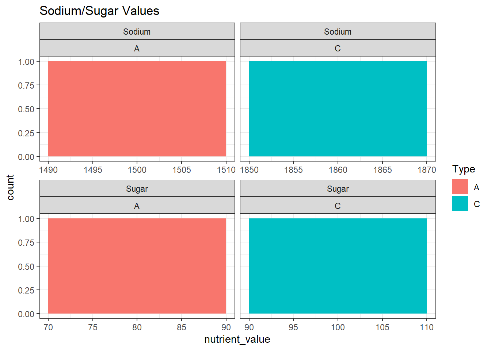
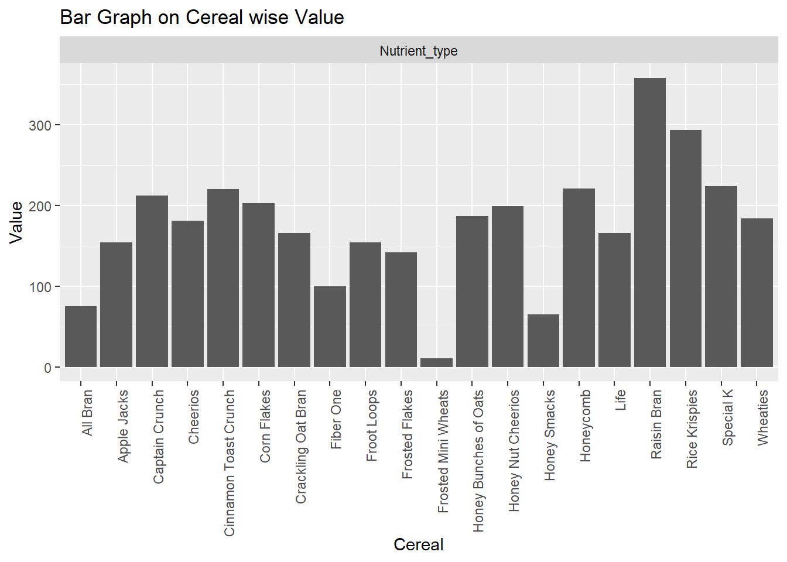

library(tidyverse)
library(ggplot2)
knitr::opts_chunk$set(echo = TRUE, warning=FALSE, message=FALSE)Challenge 5 Akhilesh
challenge_5
railroads
cereal
air_bnb
pathogen_cost
australian_marriage
public_schools
usa_hh
Introduction to Visualization
Challenge Overview
Today’s challenge is to:
- read in a data set, and describe the data set using both words and any supporting information (e.g., tables, etc)
- tidy data (as needed, including sanity checks)
- mutate variables as needed (including sanity checks)
- create at least two univariate visualizations
- try to make them “publication” ready
- Explain why you choose the specific graph type
- Create at least one bivariate visualization
- try to make them “publication” ready
- Explain why you choose the specific graph type
R Graph Gallery is a good starting point for thinking about what information is conveyed in standard graph types, and includes example R code.
(be sure to only include the category tags for the data you use!)
Read in data
Read in one (or more) of the following datasets, using the correct R package and command.
- cereal ⭐
- pathogen cost ⭐
- Australian Marriage ⭐⭐
- AB_NYC_2019.csv ⭐⭐⭐
- railroads ⭐⭐⭐
- Public School Characteristics ⭐⭐⭐⭐
- USA Households ⭐⭐⭐⭐⭐
cereal<-read_csv("_data/cereal.csv", show_col_types = FALSE)
names(cereal)[1] "Cereal" "Sodium" "Sugar" "Type" dim(cereal)[1] 20 4summary(cereal) Cereal Sodium Sugar Type
Length:20 Min. : 0.0 Min. : 0.00 Length:20
Class :character 1st Qu.:137.5 1st Qu.: 4.00 Class :character
Mode :character Median :180.0 Median : 9.50 Mode :character
Mean :167.0 Mean : 8.75
3rd Qu.:202.5 3rd Qu.:12.50
Max. :340.0 Max. :18.00 View(cereal)Briefly describe the data
print(summarytools::dfSummary(cereal,
varnumbers = FALSE,
plain.ascii = FALSE,
style = "grid",
graph.magnif = 0.50,
valid.col = FALSE),
method = 'render',
table.classes = 'table-condensed')Data Frame Summary
cereal
Dimensions: 20 x 4Duplicates: 0
| Variable | Stats / Values | Freqs (% of Valid) | Graph | Missing | |||||||||||||||||||||||||||||||||||||||||||||||||||||||
|---|---|---|---|---|---|---|---|---|---|---|---|---|---|---|---|---|---|---|---|---|---|---|---|---|---|---|---|---|---|---|---|---|---|---|---|---|---|---|---|---|---|---|---|---|---|---|---|---|---|---|---|---|---|---|---|---|---|---|---|
| Cereal [character] |
|
|
 |
0 (0.0%) | |||||||||||||||||||||||||||||||||||||||||||||||||||||||
| Sodium [numeric] |
|
15 distinct values |  |
0 (0.0%) | |||||||||||||||||||||||||||||||||||||||||||||||||||||||
| Sugar [numeric] |
|
15 distinct values |  |
0 (0.0%) | |||||||||||||||||||||||||||||||||||||||||||||||||||||||
| Type [character] |
|
|
 |
0 (0.0%) |
Generated by summarytools 1.0.1 (R version 4.2.1)
2022-09-04
- The dataset ‘cereal’ contains sodium, sugar value along with ‘type of cereal’ for each cereal type.
- There are 20 different type of cereals
- Type column variable has two values: ‘A’ and ‘C’, both have frequency of 10
- ‘Sodium’ column variable has min, max, mean values of 0, 340, 167 respectively
- ‘Sugar’ column variable has min, max, mean values of 0, 18, 8.75 respectively
- For ‘A’ type cereals min, max, mean values of ‘Sodium’ is 0, 340, 149 respectively
- For ‘A’ type cereals min, max, mean values of ‘Sugar’ is 0, 18, 9.22 respectively
- For ‘C’ type cereals min, max, mean values of ‘Sodium’ is 130, 290, 185 respectively
- For ‘C’ type cereals min, max, mean values of ‘Sugar’ is 1, 14, 9.2 respectively
Tidy Data (as needed)
Is your data already tidy, or is there work to be done? Be sure to anticipate your end result to provide a sanity check, and document your work here.
cereal <- pivot_longer(cereal, cols= c('Sodium', 'Sugar'), names_to='Nutrient_type', values_to ='Value') Sanity check
head(cereal)# A tibble: 6 × 4
Cereal Type Nutrient_type Value
<chr> <chr> <chr> <dbl>
1 Frosted Mini Wheats A Sodium 0
2 Frosted Mini Wheats A Sugar 11
3 Raisin Bran A Sodium 340
4 Raisin Bran A Sugar 18
5 All Bran A Sodium 70
6 All Bran A Sugar 5str(cereal)tibble [40 × 4] (S3: tbl_df/tbl/data.frame)
$ Cereal : chr [1:40] "Frosted Mini Wheats" "Frosted Mini Wheats" "Raisin Bran" "Raisin Bran" ...
$ Type : chr [1:40] "A" "A" "A" "A" ...
$ Nutrient_type: chr [1:40] "Sodium" "Sugar" "Sodium" "Sugar" ...
$ Value : num [1:40] 0 11 340 18 70 5 140 14 200 12 ...summary(cereal) Cereal Type Nutrient_type Value
Length:40 Length:40 Length:40 Min. : 0.00
Class :character Class :character Class :character 1st Qu.: 8.50
Mode :character Mode :character Mode :character Median : 17.00
Mean : 87.88
3rd Qu.:180.00
Max. :340.00 View(cereal)NA primary check
NA_SUM <- sum(is.na(cereal))
View(cereal)NA_SUM is zero, so there is no NA value in the dataset
Mutate to change class of ‘Cereal’ column from character to factor
cereal <- cereal %>%
mutate_at(c('Cereal', 'Type', 'Nutrient_type'), factor)‘Cereal’, ‘Type’& ‘Nutrient_type’ columns are character class, need to be converted to factor and reorder for graphic visualization.
Remaining columns are numeric and don’t need mutation,
String values in the column, can be represented numerically by setting numeric labels
Factors are important for indicating subsets of dataset for categorical variables, also Reordering helps in alignment of graphs
Univariate Visualizations
b <- cereal %>%
group_by(Nutrient_type, Type) %>%
summarise(sum(Value),.groups = 'keep') %>%
rename(nutrient_value = `sum(Value)`)
ggplot(b, aes(nutrient_value, fill = Type)) +
geom_histogram(binwidth = 20) +
labs(title = "Sodium/Sugar Values") +
theme_bw() +
facet_wrap(Nutrient_type~Type, scales = "free_x")
Bivariate Visualization(s)
ggplot(cereal, aes(x=Cereal, y=Value)) +
geom_bar(stat = "identity")+theme(axis.text.x=element_text(angle=90,hjust=1))+
facet_wrap(~'Nutrient_type')+
labs(title = "Bar Graph on Cereal wise Value")
Any additional comments?